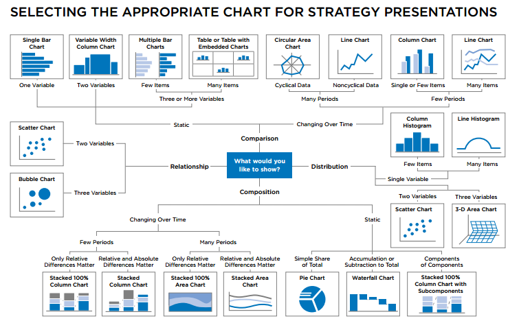
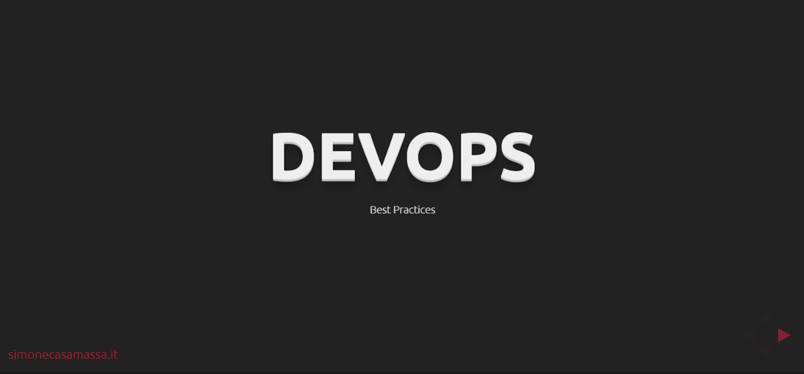
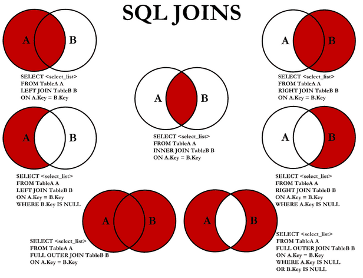

La scelta di un grafico nella visualizzazione di informazioni risulta basilare per condividere il corretto messaggio agli altri interlocutori.
Il seguente diagramma può aiutare a scegliere il grafico da utilizzare in base al numero ed al genere di variabili da graficare:

In progetti d'integrazione aspetti trasversali al business come la gestione degli errori rivestono un ruolo
fondamentale.
La presentazione descrive le principali pratiche da adottare in contesti di integrazione ESB, SOA o BPM per poter prevenire e gestire gli errori. In particolar modo saranno trattati 4 punti principali:
DevOps è un termine entrato da qualche anno nel gergo informatico delle metodologie di sviluppo ed operation IT. Con la seguente presentazione si ricapitolano i principali componenti metodologici, il modo in cui questi si applichino alla realtà e con quali strumenti.
Oltre a fornire una panoramica su ciò che DevOps è si forniscono le principali linee guida per adottare teniche di DevOps sul progetto:
.
Principali linee guida per lo sviluppo e la progettazione di logiche d'integrazione tramite Oracle Service Bus:
In una base di dati relazionale si possono realizzare diverse tipologie di relazioni tra le tabelle, andando a definire quindi diverse categorie di join.
In particolare, il JOIN è una clausola del linguaggio SQL che serve a combinare (unire) le tuple di due o più relazioni di un database tramite l'operazione di congiunzione (od unione) dell'algebra relazionale. Lo standard ANSI definisce alcune specifiche per il linguaggio SQL sul tipo di JOIN da effettuare: INNER, FULL, LEFT e RIGHT. In alcuni casi è possibile che una tabella possa essere combinata con se stessa, in questo caso si parlerà di self-join.
La totale comprensione delle differenze tra esse permette di evitare inconvenienti ed errori di relazione durante la fase di sviluppo e test. Per chiarire visivamente le differenze tra i vari join ed i risultati ottenuti tra due tabelle, risulta intuitivo ed utili visualizzare il seguente diagramma che spiega in modo conciso ma chiaro i diversi join con i diversi risultati ottenuti:
